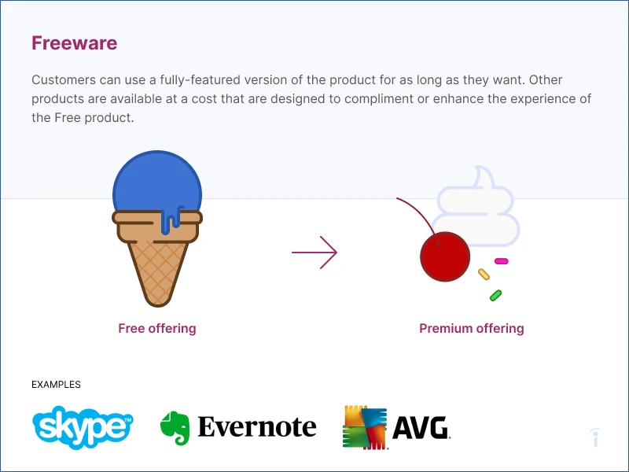

Indeed / Job Refresh
Keep the job.
Renew its relevance.
Employers duplicated open jobs to recover visibility, usually leaving the original post active. One opening could become multiple active records.
I connected that research finding to a platform initiative and proposed Refresh: meaningful updates to the existing job instead of another duplicate.
The team trialed Refresh for six months before including it in Sponsored Jobs. Employers reported less time and effort; the feedback was qualitative.

- My contribution
- Senior UX Designer; research, cross-team proposal, information architecture, interaction design, messaging, and prototypes
- Partners
- Product owner, lead engineer, and engineers exploring duplicate reduction
- Delivery
- Six-month free trial for a segment of free posts, then a Sponsored Jobs feature
The workaround revealed
a different product need.
While testing applicant-management concepts, employers repeatedly described duplicating stale posts so they looked active again, usually without closing the original. This surfaced without prompting.
I brought the finding to my product owner and lead engineer. A separate platform initiative was exploring duplicate reduction; the employer behavior explained why more duplicates kept appearing.
Change the behavior
before cleaning up the records.
Engineers were exploring ways to identify and de-duplicate jobs. True duplicates were difficult to identify, and archiving or merging distinct jobs was a risk we could not take.
I proposed a complementary product path: help employers maintain the original record. My product owner and lead engineer helped align stakeholders around a trial, followed by inclusion in Sponsored Jobs.
The decision
Renewed visibility should require updated information rather than resurface an unchanged post.
Refresh required substantial, recent updates to compensation, job-description details, or company information. That connected employer visibility with a more current description for job seekers; it did not establish a measured job-seeker benefit.
Make the useful action
the simpler action.
I owned the information architecture, interaction flow, messaging, and prototypes. The wider team carried delivery. The eligibility message connected the action to the existing post rather than asking employers to create another one.

Where the research began
The Monetization team was exploring additional value for Sponsored Jobs. I proposed a feature inventory and a Kano-based approach to employer expectations, then worked with product and engineering on three prototype directions.
A strategy deck compared seven freemium models. Applicant search, filtering, and management remained prototype explorations; we paused to consider potential hiring bias. These explorations informed the research, but are not delivered outcomes of Refresh.

What changed
Less effort for employers.
Measured limits stay visible.
The team offered Refresh to a segment of free job posts. Employers reported that it saved time and effort compared with duplicating and reposting the job. It remained free for six months before becoming a Sponsored Jobs feature.
Feedback was qualitative. Revenue lift, paid adoption, duplicate reduction, and job-seeker outcomes are not quantified in this account.
What I took forward
Investigate the intent behind a workaround. Connecting that intent to another team’s constraints opened a product path at the source of the behavior.